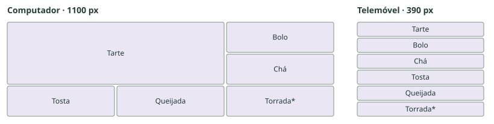

Especialidade da semana
Tarte de pera e amêndoa
A massa descansa de véspera. A primeira tarte sai às nove.
Café da turma / Grid / G02
Objetivo: Constrói uma montra de produtos. No telemóvel, todos os cartões ficam em coluna. No computador, a tarte ocupa o espaço de quatro cartões: duas colunas por duas filas, com o bolo e o chá à sua direita.
Larguras para testar: 390 px, 768 px e 1100 px. São larguras da janela do navegador. Só escreves uma media query se o exercício a pedir.
No CSS: escreve 16px, sem espaço entre o número e a
unidade.
Primeiro passo: Abre style.css no editor e lê a etapa 1.
Quando fizeres uma alteração, guarda o ficheiro e atualiza esta página para veres o que
mudou.
Este esquema mostra as posições, sem escala. Para a largura intermédia, usa os testes no fim. O asterisco assinala o elemento que a ficha pede para acrescentar.

Área de trabalho · Montra das especialidades
Especialidade da semana
A massa descansa de véspera. A primeira tarte sai às nove.
Fatia de bolo com nozes e canela.
Infusão preparada no momento.
Em pão de centeio, com salsa.
Pequena, fresca e com raspa de limão.
Já conheces: Colunas iguais, gap, filas automáticas e minmax para deixar crescer uma fila com o texto.
Com apoio nesta ficha: span 2 significa «ocupar duas». Usa-o no cartão da tarte: grid-column para a largura e grid-row para a altura.
Encontras as instruções de cada etapa em style.css.
Usa o modo responsivo do navegador. Experimenta 390 px (telemóvel), 768 px (intermédio) e 1100 px (computador).
Assinala os testes que passaram. As marcas desaparecem quando atualizas a página; guarda o
resultado em registo.md.
A 1100 px, mantém o destaque largo, mas limita-o a uma só fila. Prevê a nova posição do chá.
No destaque a 1100 px, substitui a ocupação de duas filas por dois números de linha. Compara o resultado e desfaz a mudança.
Faz a experiência no inspetor e repõe as regras no fim.